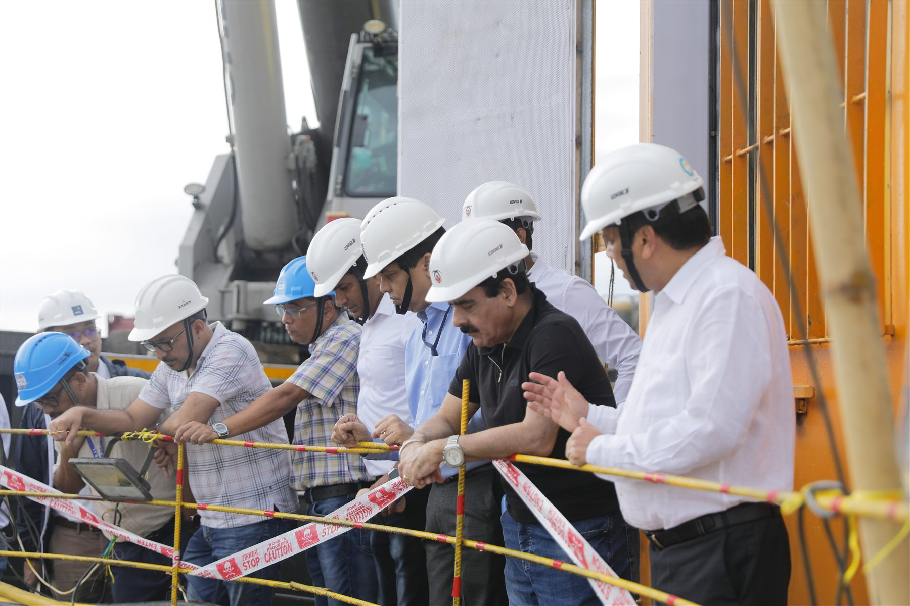

Microtunnelling & boring
Equipment-led underground excavation and installation works.

BUILT BELOW. BUILT TO LAST.
ATOZ Infracon Pvt Ltd works where complex underground construction meets practical, on-site execution.
WHO WE ARE
Underground works demand careful planning, the right equipment and people who understand conditions on site.
ATOZ Infracon brings these elements together for civil infrastructure works, with experience visible across tunnelling equipment, pipe installation, shaft works and active project sites.
Explore our expertiseWHAT WE DO
Specialist capability for the demanding stages of underground construction.
Equipment-led underground excavation and installation works.
Coordinated pipe advancement through shafts and tunnel alignments.
On-site construction activity supporting underground access and delivery.

BELOW THE SURFACE
Each underground assignment brings its own ground conditions, access needs and installation requirements. These are the key areas that shape the work on site.

Ground, alignment and site access inform how an underground route is planned and prepared.
Shafts and surface areas create the room needed for crews, equipment and pipe handling.
Specialist machinery and coordinated teams carry the excavation and pipe installation forward.
The finished underground passage is viewed and assessed before the next stage of infrastructure work.
IN THE FIELD
A look at the equipment, environments and teams behind the work.

THE PEOPLE BEHIND THE WORK
Infrastructure is built by people working together in demanding conditions. Our project photographs capture that shared focus—from planning at the workface to the crews making progress on site.
LET'S CONNECT
Bring us the scope, ground conditions and delivery challenge. We can start a conversation about the work ahead.